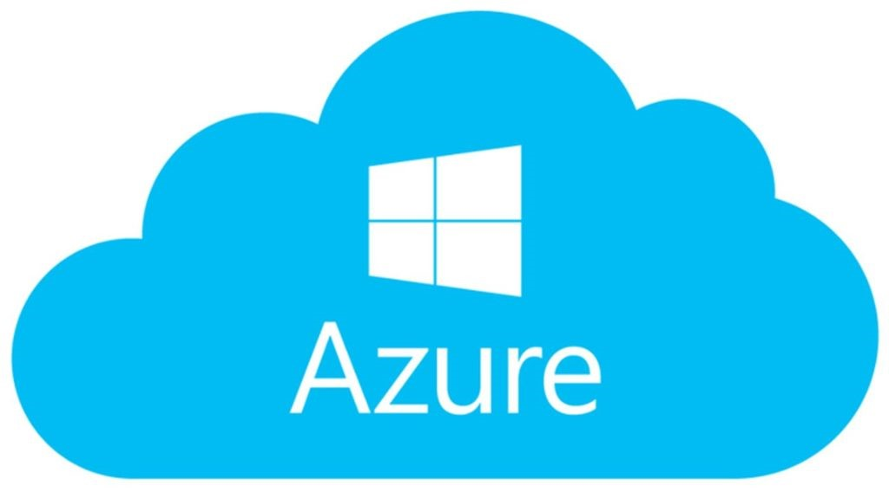
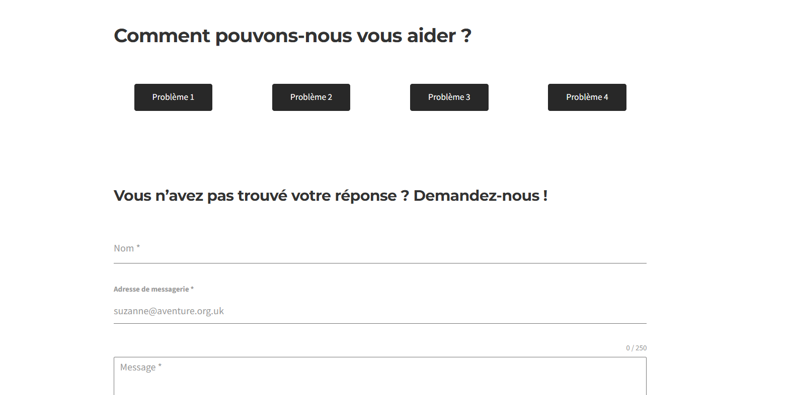
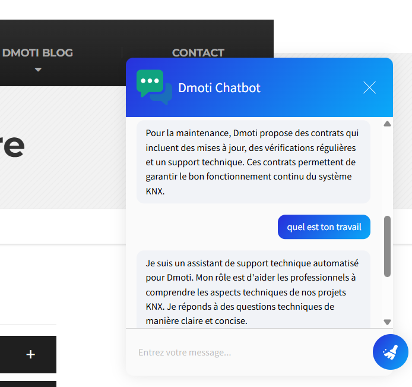
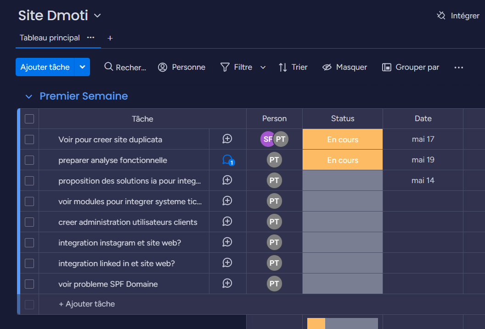

Stage : Dmoti
Période : Du 19/05/2025 au 27/06/2025
Résumé du stage (1ère année)
Lors de mon stage de première année chez Dmoti, une entreprise spécialisée dans la domotique et les bâtiments intelligents, j'ai été chargé d'améliorer leur site WordPress pour optimiser la relation client. Mes missions ont consisté à mettre en place un environnement de développement sécurisé [cite: 541], développer un portail de support technique et intégrer un assistant virtuel basé sur l'IA.
1. Architecture & Environnement de test
Pour modifier le site sans risquer de le casser en production, j'ai d'abord testé des solutions locales comme XAMPP et Docker. Face à des instabilités, j'ai finalement déployé un environnement de test robuste sur Azure Portal en migrant les données via l'extension WPvivid.


2. Espace de connexion & Système de Tickets
J'ai développé un système de connexion sécurisé avec LoginWP, gérant des redirections spécifiques selon le rôle de l'utilisateur (client ou électricien partenaire). J'y ai intégré un système de tickets de support via Forminator pour centraliser les demandes.
3. Intégration d'un Chatbot IA
Pour automatiser les réponses techniques, j'ai intégré l'API de ChatGPT (modèle GPT-3.5-turbo) à l'aide du plugin AI Engine. J'ai défini un prompt strict pour limiter l'IA au contexte de l'entreprise, et j'ai rédigé du code CSS pour animer la bulle de chat et la rendre responsive sur mobile.


4. Gestion de projet & Autonomie
Travaillant en grande autonomie, j'ai structuré mes tâches via l'outil de gestion Monday. En fin de stage, j'ai livré une documentation complète (guide de maintenance, sauvegarde, gestion du chatbot) afin de rendre l'entreprise totalement autonome avec ses nouveaux outils.
Compétences mobilisées (Référentiel BTS SIO)
1. Maintenance et sécurisation d'un site existant
Compétences : Gérer le patrimoine informatique | Travailler en mode projet.
Preuve OneNote2. Mise en place d'un environnement de développement
Compétences : Gérer le patrimoine informatique | Organiser son développement professionnel.
Preuve OneNote3. Intégration d'un système de gestion de tickets (Helpdesk)
Compétences : Répondre aux incidents et aux demandes d’assistance et d’évolution | Travailler en mode projet | Mettre à disposition des utilisateurs un service informatique.
Preuve OneNote4. Développement de la relation client digitale (Chatbot)
Compétences : Développer la présence en ligne de l’organisation | Travailler en mode projet
Preuve OneNoteTableau de Synthèse E5
Consultez l'ensemble des compétences validées durant mon parcours.
Voir le Tableau complet